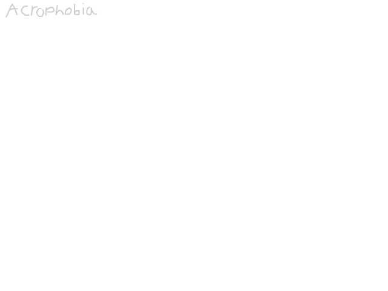

Todd 'N Todd
Todd 'N Todd is a series about Todd G. Schevnoll, a computer scientist of unkown origins,
testing out different capabilities of his sentient laptop that he named TODD, who was created by accident.
T4. Acrophobia

Previous
Download this GIF